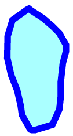
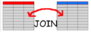
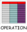
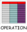
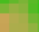
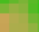
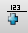
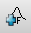
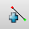

Priemerná dlhodobá strata pôdy¶
Teoretické východiská¶
Priemerné ročné straty pôdy spôsobené odtokom z pozemku určitého sklonu a určitého spôsobu využívania možno predikovať pomocou matematického modelu USLE, tzv. univerzálnej rovnice straty pôdy:
Základné symboly¶
G - priemerná dlhodobá strata pôdy (\(t.ha^{-1} . rok^{-1}\))
R - faktor eróznej účinnosti dažďa (\(MJ.ha^{-1} .cm.h^{-1}\))
K - faktor erodovateľnosti pôdy (\(t.h.MJ^{-1} .cm^{-1} .rok^{-1}\))
L - faktor dĺžky svahu (\(-\))
S - faktor sklonu svahu (\(-\))
C - faktor ochranného vplyvu vegetačného krytu (\(-\))
P - faktor účinnosti protieróznych opatrení (\(-\))
Vstupné dáta¶
hpj.shp - vektorová vrstva hlavných pôdnych jednotiek z kódov BPEJ
kpp.shp - vektorová vrstva komplexného prieskumu pôd
landuse.shp - vektorová vrstva využitia územia
povodi.shp - vektorová vrstva povodí IV. rádu s návrhovými zrážkami \(H_s\) (doba opakovania 2, 5, 10, 20, 50 a 100 rokov)
hpj_k - číselník s kódom K pre hlavné pôdne jednotky,
ciselnikyvľavokpp_k - číselník s kódom K pre pre vrstvu komplexného prieskumu pôd,
ciselnikyvpravolu_c - číselník s kódom C pre vrstvu využitia územia,
ciselnikyvpravodmt - digitálny model terénu v rozlišení 10 x 10 m,
dmt-maskavľavomaska.pack - oblasť územia bez líniových a plošných prvkov prerušujúcich odtok,
dmt-maskavpravo
Navrhovaný postup¶
1. zjednotenie hlavných pôdnych jednotiek a komplexného prieskumu pôd
2. pripojenie hodnôt faktora K k elementárnym plochám
3. prienik vrstvy s faktorom K s vrstvou využitia územia
4. pripojenie hodnôt faktora C
5. výpočet parametra KC
6. vytvorenie rastrovej mapy sklonu a mapy akumulácií toku v každej bunke
7. výpočet parametra LS
8. výpočet G a vytvorenie rastra s hodnotami predstavujúcimi priemernú dlhodobú stratu pôdy
9. výpočet priemerných hodnôt G pre povodie
10. vytvorenie rastrových vrstiev LS a G s maskou
11. výpočet priemerných hodnôt G pre povodie s maskou

Grafická schéma postupu¶
Znázornenie vstupných vektorových dát spolu s atribútovými tabuľkami je totožné
so vstupnými vektorovými dátami pri metóde SCS CN. Digitálny model reliéfu a
oblasť riešeného územia bez líniových a plošných prvkov prerušujúcich odtok
(maska) sú na dmt-maska. Tabuľky s faktormi K a C sú na
ciselniky.
Vrstva digitálneho modelu reliéfu a oblasť riešeného územia bez prvkov prerušujúcich odtok.¶
Číselníky s kódmi K a C.¶
Postup spracovania v QGIS¶
Krok 1¶
Postup ako zjednotiť vrstvu hlavných pôdnych jednotiek a komplexného prieskumu pôd je totožný s prvým krokom pri metóde SCS CN.
Krok 2¶
Pripojenie tabuliek hpj_k a kpp_k je tiež podobné ako
druhý krok pri metóde SCS CN
iba s tým rozdielom, že spoločným atribútom nie je hydrologická skupina
HPJ, ale faktor K. Dialógové okno s nastaveniami pre
toto spájanie je na usle-join. Vyplnenie informácií o faktore K
z vrstvy komplexného prieskumu pôd pomocou kalkulačky polí
a znázornenie výsledku sú na usle-kalk-k.
Pripojenie číselníkov s faktorom K v prostredí QGIS.¶
Vytvorenie atribútu s hodnotami faktora K pre elementárne plochy v záujmovom území.¶
Krok 3¶
Aj tento krok sa veľmi podobá na tretiu časť postupu pri metóde SCS CN. Na vytvorenie prieniku vrstvy hpj_kpp s vrstvou využitia krajiny landuse v riešenej oblasti využijeme modul  v.overlay.and. Výsledok nazveme hpj_kpp_landuse.
{kind=link}
Krok 4¶
Pokračujeme pripojením hodnôt faktora C k elementárnym plochám vrstvy
hpj_kpp_landuse, viď. usle-db-join-c so znázornením dialógového
okna modulu  v.db.join.
{kind=link}
Pripojenie hodnôt faktora C k elementárnym plochám.¶
Krok 5¶
Pre ďalšie výpočty je potrebné, aby typ atribútov s faktorom K a faktorom C
bol číselný. Použijeme modul  v.db.addcolumn,
modul  v.db.update_op, funkciu
v.db.addcolumn,
modul  v.db.update_op, funkciu cast() a typ real.
{kind=link}
Hodnoty oboch faktorov vynásobíme pre každú plochu a nový atribút nazveme
KC. V záložke Region nastavíme rozlíšenie 1 x 1 m a modulom
 v.to.rast.attr vektor hpj_kpp_landuse prevediem
na rastrové dáta kc. Následne použijeme modul 
r.resamp.stats a raster prevzorkujeme pomocou agregácie tak, aby rozlíšenie
odpovedalo rozlíšeniu 10 x 10 (rozlíšenie dmt). Použijeme redukciu
rozlíšenia na základe priemeru hodnôt vypočítaného z okolitých buniek
(
v.to.rast.attr vektor hpj_kpp_landuse prevediem
na rastrové dáta kc. Následne použijeme modul 
r.resamp.stats a raster prevzorkujeme pomocou agregácie tak, aby rozlíšenie
odpovedalo rozlíšeniu 10 x 10 (rozlíšenie dmt). Použijeme redukciu
rozlíšenia na základe priemeru hodnôt vypočítaného z okolitých buniek
(r-resamp-stats).
Výsledok je na kc.
{kind=link}
Poznámka
Týmto postupom nedôjde k strate informácie, ku ktorej by došlo pri priamom prevode na raster s rozlíšením 10 x 10 m (hodnota bunky by bola zvolená na základe polygónu, ktorý prechádza stredom bunky alebo na základe polygónu, ktorý zaberá najväčšiu časť plochy bunky).
Dialógové okno modulu na prevzorkovanie rastra pomocou agregácie na základe priemeru okolitých buniek.¶
Faktor KC zahrňujúci vplyv erodovateľnosti pôdy a vplyv ochranného vplyvu vegetačného krytu.¶
Krok 6¶
Z digitálneho modelu terénu vytvoríme rastrovú mapu znázorňujúcu sklonové pomery v stupňoch a nazveme ju slope.
Pred výpočtom nastavíme masku
(oblasť výpočtu) podľa vrstvy dmt modulom r.mask, viď.
. Všetky rastrové
operácie budú obmedzené na masku oblasti (v mapsete ako MASK).
Následne spustíme modul  r.slope a vypočítame sklon v riešenom
území (
r.slope a vypočítame sklon v riešenom
území (slope a slope-accumulation vľavo).
{kind=link}
Výpočet sklonových pomerov v záujmovom území.¶
Ďalej otvoríme príkazový riadok shell, spustíme modul
r.terraflow, ktorý z digitálneho modelu terénu produkuje vyhladený DMT
(dmt_fill), rastrovú mapu smeru
odtoku do susednej bunky s najväčším sklonom (direction), mapu mikropovodí
(swatershed), rastrovú mapu znázorňujúcu akumuláciu toku v každej bunke
(accumulation) a mapu konvergenčného topografického indexu (tci).
Dialógové okno modulu je na terraflow. Zobrazenie ďalej potrebnej akumulácie
odtoku v \(m^2\) je na slope-accumulation vpravo.
{kind=link}
Dialógové okno modulu r.terraflow.¶
Sklonové pomery v stupňoch a akumulácia odtoku v \(m^2\).¶
Krok 7¶
Topografický faktor LS vypočítame ako
Použijeme grafický kalkulátor rastrových máp  r.mapcalc
().
Pri používaní tohto modulu je potrebné, aby vrstvy boli pridané v paneli vrstiev
v aktuálnom projekte QGIS.
r.mapcalc
().
Pri používaní tohto modulu je potrebné, aby vrstvy boli pridané v paneli vrstiev
v aktuálnom projekte QGIS.
Poznámka
V paneli prehliadača nájdeme príslušný mapset a pravým kliknutím
myši na konkrétnu mapu zvolíme Přidat vrstvu.
V dialógovom okne modulu r.mapcalc zostavíme algoritmus.
Ikonou pridáme rastrovú mapu, ikonou  konštantu, ikonou 
vložíme operátor alebo funkciu, ikona  spája jednotlivé elementy, pomocou
elementy vyberáme a ikonou ich možno vymazať.
Výraz na výpočet LS a výsledok sú na calc-ls.
{kind=link}
{kind=link}
{kind=link}
{kind=link}
{kind=link}
{kind=link}
Grafický kalkulátor a topografický faktor LS zahrňujúci vplyv dĺžky a sklonu svahu.¶
Tip
Výpočet v príkazovom riadku napíšeme ako
r.mapcalc expr="ls = pow(accumulation * (10.0 / 22.13), 0.6) * pow(sin(slope * (3.14159/180)) / 0.09, 1.3)"
Krok 8¶
Na výpočet parametra G okrem KC a LS ešte potrebujeme faktor R a P,
ktorých hodnoty nebudeme odvádzať ako tie predchádzajúce. Použijeme priemernú
hodnotu R a P faktora pre Českú republiku, t.j R = 40 a P = 1.
Následne modulom r.mapcalc vypočítame stratu pôdy, viď.
vzťah na výpočet G. Vrstva s hodnotami predstavujúcimi
priemernú dlhodobú stratu pôdy v jednotkách \(t.ha^{-1} . rok^{-1}\) je
na g-map.
Priemerná dlhodobá strata pôdy pre riešené územie.¶
Krok 9¶
Na určenie priemernej hodnoty straty pre každé čiastkové
povodie využijeme modul  v.rast.stats. Kľúčovou vrstvou je
vektorová mapa povodi, kde nastavíme prefix
v.rast.stats. Kľúčovou vrstvou je
vektorová mapa povodi, kde nastavíme prefix g pre
novovytvorený stĺpec. V mapovom okne QGIS hodnoty vizualizujeme (g-pov).
Povodia s priemernými hodnotami straty pôdy v jednotkách \(t.ha^{-1}.rok^{-1}\).¶
Krok 10¶
Pre výpočet uvedený vyššie môže vychádzať strata pôdy v niektorých miestach enormne vysoká. To je spôsobené tým, že vo výpočtoch nie sú zahrnuté líniové a plošné prvky prerušujúce povrchový odtok. Týmito prvkami sú najmä budovy, priekopy diaľnic a ciest, železničné trate alebo múry lemujúce pozemky.
Presnejšie hodnoty možno získať zahrnutím týchto prvkov do výpočtu.
Použijeme masku líniových a plošných prvkov prerušujúcich odtok
(vrstva maska na dmt-maska vpravo) a vypočítame nové hodnoty LS
faktora a straty pôdy G.
Modulom r.mask.rast nastavíme oblasť výpočtu
bez neželaných miest. Nastavenie skontrolujeme napríklad zobrazením digitálneho
modelu terénu (dmt-m). Dopočítame faktor LS a
faktor G.
Vrstva digitálneho modelu terénu vstupujúca do výpočtov bez prvkov prerušujúcich odtok.¶
Porovnanie výsledkov USLE bez ohľadu na prvky prerušujúce odtok a s nimi
je na g-por.
Porovnanie výsledkov USLE bez ohľadu na prvky prerušujúce odtok (vľavo) a s prvkami prerušujúcimi odtok (vpravo)¶
Krok 11¶
Priemerné hodnoty G určíme pre každé povodie po uvážení prvkov, ktoré
prerušujú odtok. Pre porovnanie sú na g-pov-por hodnoty
straty pôdy vykreslené pomocou textového diagramu v jednotkách
\(t.ha^{-1}.rok^{-1}\) bez a s úvážením prvkov prerušujúcich odtok.
Povodia s priemernými hodnotami straty pôdy v jednotkách \(t.ha^{-1}.rok^{-1}\) bez a s úvážením prvkov prerušujúcich odtok.¶